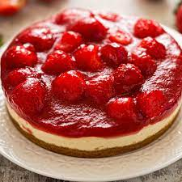

Strawberry Cheesecake

The Savory History of Cheesecake
The writer Athenaeus is credited for writing the first Greek cheesecake recipe in 230 A.D. (By this time, the Greeks had been serving cheesecake for over 2,000 years but this is the oldest known surviving Greek recipe!) It was also pretty basic - pound the cheese until it is smooth and pasty - mix the pounded cheese in a brass pan with honey and spring wheat flour - heat the cheese cake “in one mass” - allow to cool then serve.
When the Romans conquered Greece, the cheesecake recipe was just one spoil of war. They modified it including crushed cheese and eggs. These ingredients were baked under a hot brick and it was served warm. Occasionally, the Romans would put the cheese filling in a pastry. The Romans called their cheese cake “libuma” and they served it on special occasions. Marcus Cato, a Roman politician in the first century B.C., is credited as recording the oldest known Roman cheesecake recipe.
Ingredients
Crust:
- 3/4 cup ground pecans
- 3/4 cup graham cracker crumbs
- 3 tablespoons butter, melted
Filling:
- 4 packages (8 ounces each) cream cheese,softened
- 1-1/4 cups sugar
- 1 tablespoon lemon juice
- 2 teaspoons vanilla extract
- 4 large eggs, room temperature, lightly beaten
Topping:
- 2 cups sour cream
- 1/4 cup sugar
- 1 teaspoon vanilla extract
Strawberry glaze:
- 2 tablespoons cornstarch
- 1/4 cup water
- 1 jar (12 ounces) strawberry jelly
- 3 tablespoons orange-flavored liqueur or lemon juice
- Red food coloring, optional
- 1 quart whole fresh strawberries, halved
Directions
- Preheat oven to 350. Combine pecans,crumbs and butter. Press onto the bottom of a 10-in springform pan.
- In a large bowl, beat cream cheese and sugar until smooth. Beat in lemon juice and vanilla. Add eggs; beat on low speed just until blended. Spoon over crust.
- Bake until filling is almost set, 45-50 minutes. Meanwhile, for topping, combine sour cream, sugar and vanilla. Spread over cheeesecake and return to oven for 5 minutes. Cool on a wire rack 1 hour. Refrigerate overnight, covering when completely cooled.
- Several hours before serving, prepare glaze. In a saucepan, combine cornstarch and water until smooth. Add jelly and cook over medium-high heat, stirring constantly, until jelly is melted and mixture has thickened. Remove from the heat; stir in liqueur and, if desired, food coloring. Cool to room temperature.
- Just before serving, loosen and remove sides of springform pan. Arrange halved strawberries on top. Spoon glaze over berries, allowing some to drip down sides of cake. Serve immediately.